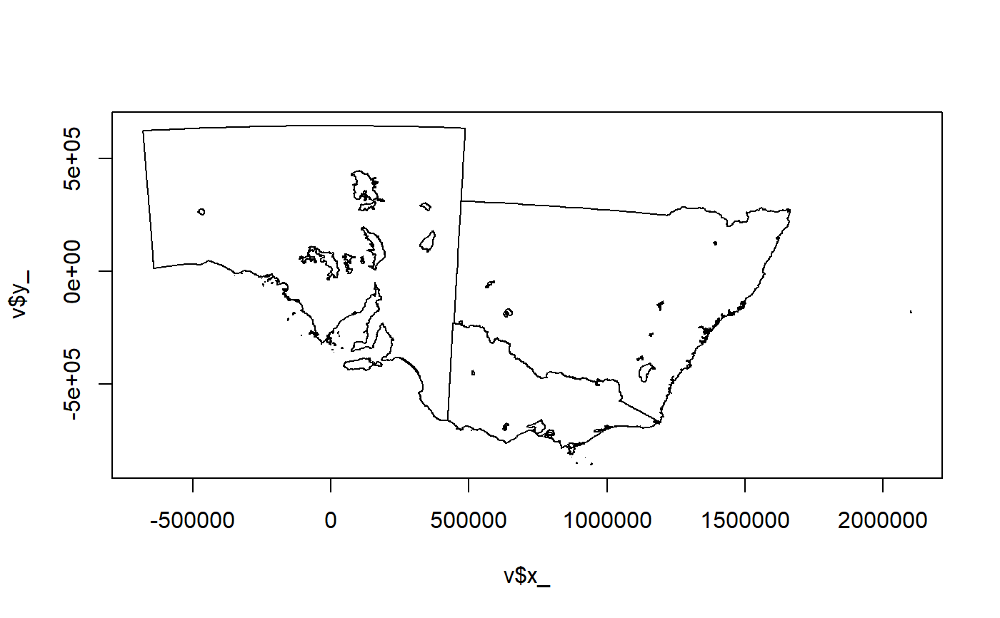
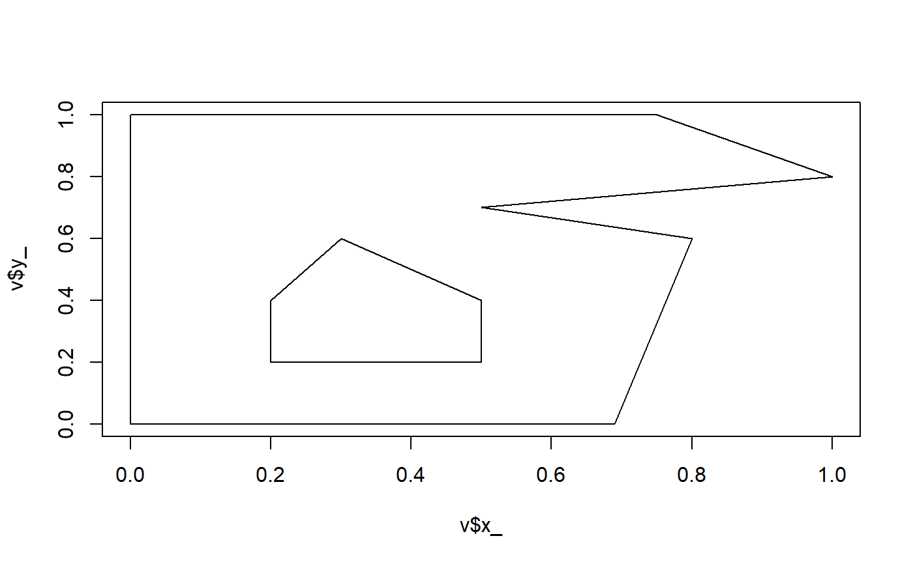

dplyr-methods.RdFilter an SC model, currently only dplyr::filter for SC is available.
# S3 method for SC filter(.data, ...)
| .data | data object of class SC |
|---|---|
| ... | passed to |
Apply expressions as if used on the object table. See sc_object(x) for that form.
Currently all the vertices are still kept, so the model (and any plots) include the filtered edges as well as undifferentiated points. This is likely to change ...
library(dplyr)#> #>#> #> #>#> #> #>#> #> #>